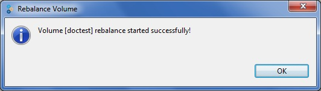

Rebalancing Volumes
You can rebalance a volume, as required. After adding bricks, you need to rebalance the data among the servers. New directories created after expanding the volume will be evenly distributed automatically through this process.
To rebalance a volume, perform the following steps:
- Choose from the menu, toolbar, or right click to select the volume. Select Rebalance Volume.
The Rebalance Volume window appears indicating that the volume rebalance was successfully started.

- Click OK.
- Select the cluster from the left pane and choose the Task tab to check the volume rebalance status.
- If you wish to temporarily stop the rebalance process, click Pause from the menu bar. Click Resume, to continue and complete the process.